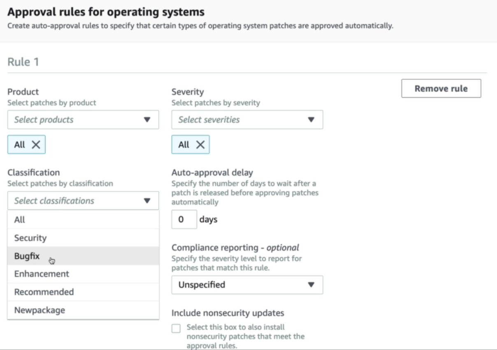
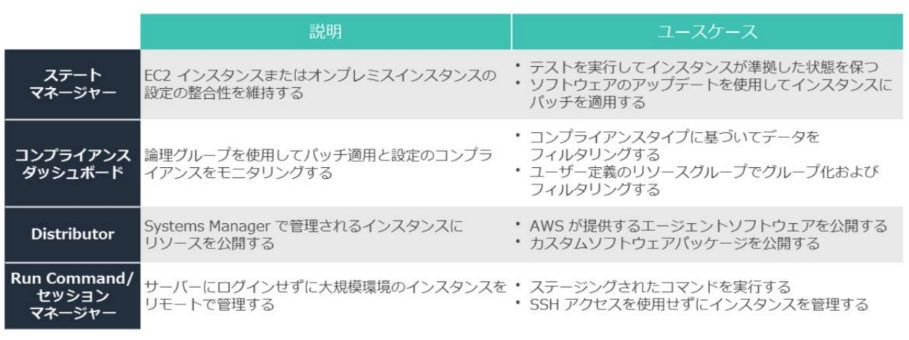
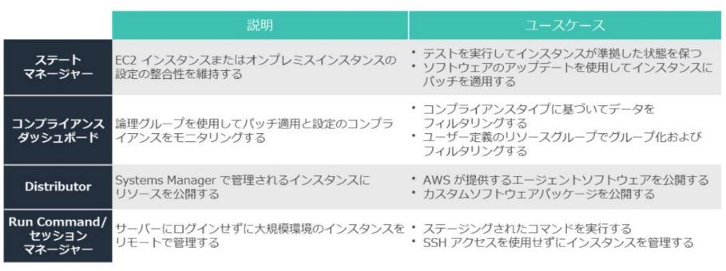
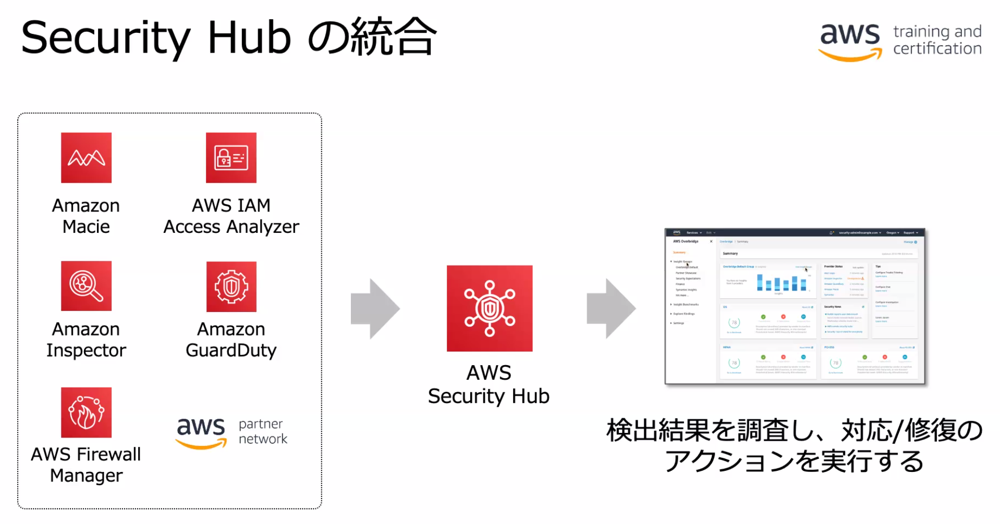

AWS Config
https://d1.awsstatic.com/webinars/jp/pdf/services/20190618_AWS-Blackbelt_Config.pdf
概要

-
AWS リソース設定のスナップショットを取得し変更履歴を保持
- 変更履歴とスナップショットを S3 バケットに保存
- 変更発生時の SNS 通知 (オプショナル)
-
AWS Config ルールによるリソース設定のコンプライアンス状態の管理
仕組み
- 定期的に各リソースの List, Describe 系 API をコールして変更監視しているとのこと。
- https://docs.aws.amazon.com/ja_jp/config/latest/developerguide/how-does-config-work.html
リソースの作成・変更が SNS 通知される。
リソースの依存関係が確認でき、リソース変更の他のリソースへの影響を評価できる。
AWS Config ルール
AWS リソースのコンプライアンス確認ルール:
- ルール実行後、対象リソースの状態が Compliant/Noncompliant に更新される。
- 1 rule = 1 $/month
２種類のトリガー(両方有効にもできる):
設定項目が Lambda 関数に送られてルール評価が実施される
-
カスタムルールはユーザが Lambda で実装。
- 例えば全ての VPC で Flow Logs が有効になっているか等。
-
リソースが対象なのでインスタンス内のアプリケーションなどはカバーされない。
マネージドルール

コンフォーマンスパック テンプレート
-
用途に合わせたベストプラクティスの AWS Config ルールの詰め合わせ。
- CloudFormation テンプレートとして提供される
-
マネージド・カスタム両方のルール、修復アクションを含む。
- ルールが 200 以上あるので個々に選択するのは大変!
- https://docs.aws.amazon.com/ja_jp/config/latest/developerguide/conformancepack-sample-templates.html
修復アクション
-
Config ルールに Noncompliant 発生時に実行する SSM Automation アクションを設定できる
- 例: EC2 インスタンスの停止等
-
https://docs.aws.amazon.com/ja_jp/config/latest/developerguide/remediation.html
イベントの SNS 通知/CloudWatch Events 監視
- コンプライアンス状態変更に限らずリソース変更等で何か行いたい場合は SNS 通知を使用。
- コンプライアンス状態変更で SSM Automation 以外を実行したい場合は CloudWatch Events を使用。
- ConfigurationItemChangeNotification: リソースの作成/削除/設定変更
- ComplianceChangeNotification: リソースの AWS Config ルール準拠状況の変更通知
- これらは SNS 通知するように設定できるとともに、CloudWatch Events/EventBridge でも監視できる。
- https://docs.aws.amazon.com/ja_jp/config/latest/developerguide/how-does-config-work.html#delivery-channel-SNS-topic
- https://docs.aws.amazon.com/config/latest/developerguide/monitor-config-with-cloudwatchevents.html
Config ダッシュボード
- 監視対象のリソース数や非準拠ルール数を表示するダッシュボード
- https://docs.aws.amazon.com/ja_jp/config/latest/developerguide/viewing-the-aws-config-dashboard.html
アグリゲータ・集約ビュー
- マルチアカウント/マルチリージョンの AWS Config 情報を中央アカウントに作成したアグリゲーターで集約。
- ソースアカウントとリージョンを指定する。
- アカウントは Organization 統合による一括設定も可能。
- Ref https://dev.classmethod.jp/articles/config-aggregator-in-organization-member-account/
集約ビューのメニューから集約ビューを表示
- このユースケースはカスタムルールを実装する Lambda で修復も行っている？
Ref. AWS Config によるモニタリングとレスポンス
Security Engineering on AWS: Lab 3 - AWS Config によるモニタリングとレスポンス
AWS Config で S3 パブリックバケットを監視し CloudWatch Events 経由で SNS 通知と Lambda による修復を行う。
CloudWatch Events がキモ:
- AWS Config をソースにした CloudWatch Event ルールを設定
- CloudWatch Event ルールのターゲットとして Lambda と SNS を設定
- Lambda の関数ポリシーに CloudWatch Event が InvokeFunction する許可を追加
ステップ:
-
S3 を対象とした設定レコーダーを作成する。
- aws configservice put-configuration-recorder
-
配信チャネルを作成する。
- スナップショット保存先のバケット名と通知先 SNS トピック名を指定。
- aws configservice put-delivery-channel
-
設定レコーダーを起動する。
- aws configservice start-configuration-recorder
-
AWS Config ルールを投入する
-
2つの AWS 管理ルールを指定してそれぞれ投入
- S3_BUCKET_PUBLIC_READ_PROHIBITED
- S3_BUCKET_PUBLIC_WRITE_PROHIBITED
-
aws configservice put-config-rule
-
-
修復のための Lambda 関数を作成する
- CloudWatch Events でコールされ、バケット設定を修正し、SNS 通知する Lambda 関数。
- AWS Config のイベントが CloudWatch Events で渡される。
-
AWS Config をソースにした CloudWatch Event ルールを設定する
- aws events put-rule
-
CloudWatch Event ルールのターゲットとして Lambda と SNS を設定する
- aws events put-targets
-
Lambda の関数ポリシーに CloudWatch Event が InvokeFunction する許可を追加
- aws lambda add-permission
-
AWS Config ルールを実行する
- aws configservice start-config-rules-evaluation
AWS Systems Manager (SSM)
https://d1.awsstatic.com/webinars/jp/pdf/services/20200212_AWSBlackBelt_SystemsManager_0214.pdf
- インスタンスの運用サービス。
- インベントリ管理や、パッチ適用などの管理業務の自動化が可能。
マネージドインスタンス (SSM Agent)
- SSM エージェントがインストールされたインスタンス。Amazon Linux はインストール済。
- インスタンスポリシーは AmazonSSMManagedInstanceCore をアタッチする。
- SSM エンドポイントにアウトバウンドでポーリングするのでインターネットアクセスか VPC エンドポイントが必要。
オンプレの場合: ロールを紐づけたアクティベーション ID/Code を発行して SSM Agent に指定する
Command:
sudo amazon-ssm-agent -register -code ${ACTIVATION_CODE} -id ${ACTIVATION_ID} -region ${REGION}
- オンプレインスタンスには SSM コンソールからタグづけできる。
- コンソール上で「mi-」(managed-instance) プレフィックスで表示される。
リソースグループ
- AWS リソースのグループ化。同一リージョン。
ダッシュボード・インベントリ
SSM Explorer
運用データ (OpsData) のダッシュボード
デフォルトダッシュボードに表示されるOpsData (運用データ):
-
EC2情報
- インスタンス数、マネージドインスタンス数、AMI別インスタンス
-
OpsCenter OpsItems
- パッチコンプライアンス
- Patch Manager でパッチに準拠していないインスタンス数
その他、AWS サポートセンターのケース、Trusted Advisor の項目, AWS Config ルールの準拠/非準拠数、Security Hub の検出数なども OpsData としてダッシュボード表示可能。
SSM OpsCenter
AWSリソースに関する運用作業項目 (OpsItems) のダッシュボード。
OpsItems の生成例:
| サービスや機能 | 詳細 |
|---|---|
| EventBridge | OpsItems 作成を設定できる EventBridge ルールの種類: - AWS Security Hub: セキュリティアラートが発行されました - Amazon DynamoDB: スロットリングイベント - Amazon EC2 Auto Scaling: インスタンスの起動に失敗しました - Systems Manager: オートメーションを実行できませんでした - AWS Health: スケジュールされたメンテナンスのアラート - EC2 インスタンスの状態の Runningから Stoppedへの変更 |
| CloudWatch アラーム | OpsItems 作成の CloudWatch アラームを設定できるメトリクスのタイプ: - EC2: CPU 使用率がしきい値に達する - EC2: インスタンスがステータスチェックに失敗する - EBS: ディスク領域の使用率がしきい値に達する - DynamoDB: データベースの読み取りおよび書き込みアクションがしきい値に達する - AWS Billing and Cost Management: 推定請求額がしきい値に達する |
| SSM Incident Manager | インシデント (サービスの品質の計画外の中断または低下) 発生時に OpsItems を作成。 |
SSM コンプライアンスダッシュボード
パッチマネージャーのスキャン結果等のダッシュボード。
SSM インベントリ
インスタンス内のインベントリ情報の収集・可視化。

S3 に情報を保管するので、Athena などで分析できる。
AWS Config に送信することで、変更履歴の追跡、Config ルールによるコンプライアンスチェックも。
自動化
SSM ドキュメントを Run Command や Automation で実行。
Command ドキュメント、Automation ドキュメントなどの4種類がある。
ドキュメント作成: Document Builder
ドキュメント実行: Run Command/Automation
Run Command
- 指定したインスタンス群でコマンドドキュメントを実行。
- コンソール出力は S3 や CloudWatch Logs にアウトプットするよう指定可能。
Automation
- インスタンスや AWS リソースに処理を行う Runbook を実行する。
- Runbook の例: AWS-UpdateLinuxAmi
- ベース AMI をインスタンス起動してアップデート実行後に新しい AMI を作成するまでの一連のステップを行う。
- アクションの例:
- aws:executeAwsApi: AWS API を実行。
- aws:waitForAwsResourceProperty: 特定のリソース状態またはイベント状態を待つ。
実行のスケジュール: メンテナンスウィンドウ/ステートマネージャー
SSM メンテナンスウィンドウ
- スケジュールを指定して登録されたアクションを実行
パッチマネージャー

-
AWS-RunPatchBaseline か AWS-RunPatchBaselineAssociation で実行される。
-
メンテナンスウィンドウに Run Command タスクの AWS-RunPatchBaseline を登録するような使い方。
ユースケース
 

オートメーション
- SSM ドキュメントで AWS リソースのメンテナンスとデプロイタスクを実行
- https://docs.aws.amazon.com/ja_jp/systems-manager/latest/userguide/systems-manager-automation.html
Run Command
- インスタンスの OS 上でコマンドドキュメントを実行する。
パッチマネージャー
- インスタンスのスキャン、コンプライアンスレポート生成、パッチ適用が可能。(パッチをチェックして自動的にあてるなら Inspector でなくこちら)
- オンデマンド/スケジュールでスキャンまたはパッチ適用を実施。
- OS とアプリの両方が対象。(Windows では MS のアプリのみ)
- https://docs.aws.amazon.com/systems-manager/latest/userguide/systems-manager-patch.html
ステートマネージャー
- インスタンス起動時またはスケジュールで SSM ドキュメントを実行
- https://dev.classmethod.jp/articles/patching-all-instance-by-ssm-state-manager/
コンプライアンスダッシュボード
- パッチグループや環境など、定義した論理グループによってパッチ適用や設定のコンプライアンスをモニタリングできる
Distributor
- AWS 提供のエージェントやカスタムソフトウェアのリソースをインスタンスに公開
セッションマネージャー
- ブラウザからインスタンスにコンソールログインできる。
- セキュリティグループでのインバウンドポート開放や踏み台ホスト, SSH 不要。
- セッションヒストリを記録して S3 や CloudWatch Logs に送って監視することもできる。
- Session Manager Run As:
- コマンドを実行するユーザの指定。
- OS ユーザとセッションマネージャーの IAM プリンシパルの関連付け。
インスタンスの SSH キーが流出した場合に RunCommand で ~/.ssh/auhorized_keys を変更するというユースケースがあった。
Security Engineering on AWS: Lab2 ASM と Amazon Inspector 連携
- SSM Run Command でインスタンスへ Inspector エージェントをインストール
- Inspector を実施・レポートを確認
- SSM Automation で AWS-PatchInstanceWithRollback を実行してパッチをあてる
Amazon Inspector
- 起動中 EC2 インスタンス/ECS コンテナ/ECR イメージの脆弱性チェックを実行してレポートを生成。
- 月250回までで1台実行毎に$0.3。
-
アプリケーション脆弱性診断。
- apt, yum, Windows Installer を使用してイ ンストールされたソフトウェアを評価。
- make install 等で直接コピーされたバイナリは評価されない。
-
ネットワーク到達性診断
- オープンポートの検査。不要なサーバやセキュリティグループ誤設定によって外部から到達可能なポートのチェック。
- RecognizedPort: Well known port
- UnrecognizedPortWithListener: Not well known port で Listen されているもの
- NetworkExposure: ENIとセキュリティグループの組み合わせごとに到達可能なポート範囲
評価テンプレート
- 実行時間のスケジュール、通知先 SNS トピック、ルールパッケージを設定。
ルールパッケージ
- CVE (共通脆弱性識別子)
-
CIS (Center for Internet Security)
- OS のセキュリティ設定ベストプラクティスのベンチマーク
-
セキュリティのベストプラクティス
- SSH 経由の root ログインを無効化する
- SSH バージョン 2 のみをサポート
- SSH 経由のパスワード認証を無効化する
- パスワードの有効期限を設定する
- パスワードの最小文字数を設定する
- パスワードの複雑さを設定する
- ASLR の有効化
- DEP の有効化
- システムディレクトリに対するアクセス許可の設定
-
ネットワーク到達可能性ルール
- Ref. https://docs.aws.amazon.com/ja_jp/inspector/latest/userguide/inspector_rule-packages.html
Inspector エージェント(オプショナル)
- SSM Agent あれば SSM Run Command でインストールできる
- Amazon Inspector also offers predefined software called an agent that you can optionally install in the operating system of the EC2 instances that you want to assess. The agent monitors the behavior of the EC2 instances, including network, file system, and process activity. It also collects a wide set of behavior and configuration data (telemetry).
問題例: SSHでのルートログインを可能にするインスタンスをチェックするために、どのAmazon Inspectorルールパッケージを使用しますか？(2つ選択)
- CIS ルールパッケージ: SSH 経由の root ログインを含む安全な設定ポスチャーのレポート
- セキュリティのベストプラクティス: SSH 経由の root ログインを許可するインスタンスがレポートされる。
Amazon Macie
- S3 オブジェクトと CloudTrail のアクセスパターンから機械学習で脅威検知。
- S3 バケットで機密データを検出・分類・保護。
-
PII や知的財産などの機密データを識別
- 人名, 住所, クレジットカード番号, IPアドレス, メールアドレス, パスポート番号など
- ソースコード, ログ, DB バックアップなど
- AWS 管理の識別子は日本語キーワードに対応していない
- 例 "Credit Card" は検出するが "クレジットカード" は検出しない
-
ダッシュボード表示と CloudWatch Events のトリガー
- Ref. https://dev.classmethod.jp/cloud/aws/introduce-to-amazon-macie/

Amazon GuardDuty
概要
- AWS アカウントの脅威検出サービス。
- CloudTrail ログ、VPC フローログ、DNS ログのイベントを分析。
- IP レピュテーション、異常検知、機械学習などによる脅威検出。
- 検出は CloudWatch Events で通知。Events 経由で Lambda によるレスポンス自動化。
サイバーキルチェーンによる脅威検出の分類:
- ネットワーク (VPC), インスタンス, アカウントのレベルで不正検出
-
脅威インテリジェンス
- 既知の IP アドレスとドメイン名
- AWS Security に加え Proofpoint や CrowdStrike などのサードパーティープロバイダーに提供されるものを使用
-
独自の脅威インテリジェンスまたは IP セーフリストをアップロードすることも可能。
- IP レンジの指定とかはできないので NACL か WAF の Web ACL にルール投入する。
- セキュリティテストで意図的にポートスキャンを実施する場合にホストを IP セーフリストに登録するというユースケースがある。
-
カスタムルールは投入できない。
- フィルター
- 特定ホストで誤検知が頻発する場合はセーフリストに入れるよりもアラートのフィルタリングで自動アーカイブする。
- https://dev.classmethod.jp/articles/guardduty-automatically-archive-findings/
-
異常検出
- 機械学習による未知の脅威の検出
- 7~14 日かけてベースラインを生成、学習モードからアクティブモードに切り替わる。
- 脅威インテリジェンスによる既知脅威の検出はすぐに有効になる。
FAQ
https://aws.amazon.com/jp/guardduty/faqs/
料金形態: スキャンしたログの量
検出が上がるまでのタイムラグ
- GuardDuty は悪意のあるアクティビティや不正なアクティビティの分析をすぐに開始します。
- 検出結果の受信が始まる時期はアカウントのアクティビティレベルによって異なります。
- GuardDuty は履歴データを調べず、有効後に開始するアクティビティのみを調べます。
CloudTrail, VPC フローログ, DNS ログを有効にする必要はありますか?
- いいえ。GuardDuty は CloudTrail、VPC フローログ、DNS ログから独立したデータストリームを直接取得します。
- GuardDuty のアクセス許可は、サービスリンクのロールとして管理されます。
複数アカウント
- 複数アカウントを 1 つの管理者アカウントから管理できる複数アカウント機能があります。
- セキュリティ検出結果を管理者または GuardDuty 管理者アカウントに集約し、レビューと修復を行うことができます。
- この設定を使用すると CloudWatch Events も GuardDuty 管理者アカウントに集約されます。
GuardDuty の S3 Protection (2020/8 からの新機能)
- Macie で使用されていた S3 アクティビティの異常および脅威検知が GuardDuty の一部として強化されコストも 80% 以上削減された。
- 通常と異なる地理的場所から来るリクエスト、S3 ブロックパブリックアクセスなどの予防的な制御の無効化、または誤設定されたバケットアクセス許可を発見する試みと一致する API コールパターンなどの疑わしいアクティビティを検知
- S3 の CloudTrail管理イベント(コントロールプレーン API) と CloudTrail S3 データイベント (データプレーンオペレーション) のモニタリングとプロファイリングを継続的に行う
IDS 的な機能ではあるがブロックはしない
- IPS が欲しいなら AWS Network Firewall か AWS Marketplace でサードパーティーソリューションを探す。
AWS Security Hub
概要
- 組織のアカウント横断で各種セキュリティサービスの検出結果を統合、優先順位づけしてダッシュボード表示。
- 自動のコンプライアンススキャン。
- CloudWatch Events 通知とレスポンス自動化
- 無料なので有効化して損はない

- Firewall Manager 統合で4 種類の検出結果が Security Hub に送信される
- AWS WAF ルールによって適切に保護されていないリソース
- AWS Shield Advanced によって適切に保護されていないリソース
- DDoS 攻撃が進行中であることを示す AWS Shield Advanced の検出結果
- 正しく使用されていないセキュリティグループ
- AWS のセキュリティサービスとサードパーティの検出結果を集約・相関させて最優先の検出結果を特定。
- AWS ベストプラクティスや CIS, PCI-DSS 等、AWS Config のコンフォーマンスパックのコンプライアンスチェックを継続的に実施。

Amazon Detective
概要
- インシデント調査のダッシュボード (SIEM 的なサービス)
- GrardDuty 検出イベントと関連する AWS リソース、CloudTrail や VPC Flow Logs を動作グラフに集約。
- マルチアカウントのアクティビティログを集約。
- GuardDuty 有効化が必要 (GuardDuty 有効化後 48 時間待つ)
アカウントの集約
- Detective を有効にしたアカウントが動作グラフのマスターアカウントとなる。
- メンバーアカウントを招待しデータを集約する。
Ref.
- https://dev.classmethod.jp/articles/amazon-detective/
- https://dev.classmethod.jp/articles/how-to-detective/
Ref. SIEM on Amazon Elasticsearch Service
https://aws.amazon.com/jp/blogs/news/siem-on-amazon-elasticsearch-service/
- AWS から OSS で展開されている AWS サービスを対象とした ES/Kibana による SIEM の実現。
- CloudFormation で展開できる。
- ログの取り込みに対応するサービス: CloudTrail, VPC Flow Logs, GuardDuty, WAF, ELB, CloudFront, S3, Route 53 Resolver
- ログのフィールドを Lambda で正規化する
Ref. AWS 環境におけるセキュリティインシデントの調査・対応⽅法
ペネトレーションテスト
DDoS シミュレーションテストポリシー
https://aws.amazon.com/jp/security/ddos-simulation-testing/
承認された APN パートナー (AWS DDoS テストパートナー) に実行される必要がある
- APN: AWS パートナーネットワーク
テスト対象
- Shield Advanced をサブスクライブするアカウントの保護対象リソース
- Shield Advanced をサブスクライブするアカウントの API Gateway エッジ最適化エンドポイント
侵入テストの AWS カスタマーサポートポリシー
https://aws.amazon.com/jp/premiumsupport/knowledge-center/penetration-testing/
8 つのサービスは事前承認なくセキュリティ評価・侵入テストを許可されている
- EC2 インスタンス, NAT ゲートウェイ, ELB
- RDS
- Aurora
- CloudFront
- API Gateway
- Lambda 関数/Lambda Edge 関数
- Lightsail リソース
- Elastic Beanstalk 環境
禁止行為
-
DoS/DDoS
- これらは DDoS シミュレーションテストポリシーの対象
-
ポートフラッディング
- ポートスキャンや脆弱性スキャンはOK
-
プロトコルフラッディング
-
リクエストフラッディング
- ログインリクエストフラッディング、API リクエストフラッディング)
-
Route 53 ホストゾーン経由の DNS ゾーンウォーキング
AWS インフラやサービス自体のセキュリティ評価を実施することは許可されていない。
VPC から別の VPC に対するテストも禁止されているので事前承認が必要。
ネットワーク負荷テスト
https://aws.amazon.com/jp/ec2/testing/
EC2 インスタンスから、別の EC2 インスタンス、AWS サービス、外部エンドポイントなどの他のロケーションに向けて、ボリュームの大きなネットワークテストの実施する場合で、次のような条件に当てはまりそうな場合は テストの 14 営業日前までに EC2 ネットワーク負荷テストの受け入れフォームへ記入して AWS に確認する必要がある。
- 1 分を越えて継続する場合
- 1 Gbps または 1 Gpps を超える場合
- 不正または悪意のあると見られるトラフィックが生成される
- テストターゲット以外のエンティティ (ルーティングや共有サービスインフラストラクチャ) に影響を与える可能性がある